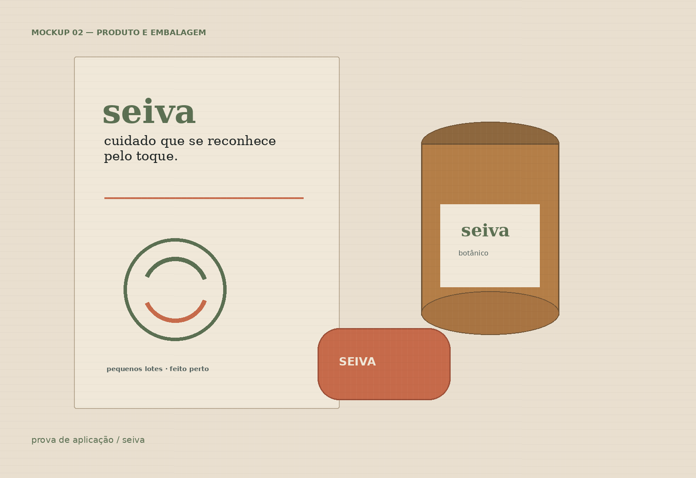

02 · Produto botânico e pequenos lotes
Seiva
O cuidado que existe no produto também aparece na embalagem.
Para quem vende cuidado, origem e textura — e não quer parecer mais uma marca verde na prateleira.
Ver como funciona ↓
Antes de desenhar,
entender.
Uma identidade que transforma uma pequena produção em uma marca que dá vontade de tocar, guardar e reconhecer de longe.
Produtos artesanais costumam ter história, mas a embalagem não consegue contá-la. O resultado é bonito isoladamente e pouco reconhecível perto de outras marcas.
“Natural não precisa ser neutro. Precisa parecer verdadeiro.”
A decisão
Uma escolha
que resolve.
Criei um selo de origem, uma paleta com verde e barro e um sistema de rótulos que funciona em papel, relevo, lacre e fotografia. A delicadeza fica no detalhe, não na falta de contraste.
Pronto para
continuar.
Você recebe um sistema que pode usar depois da entrega: com contexto, formato e indicação clara de quando cada peça entra em cena.
O objetivo não é deixar o arquivo bonito. É deixar o próximo passo mais fácil.
Próximo movimento
Quer levar esta
direção adiante?
Me conte o que você está construindo e onde a marca precisa chegar.
Falar sobre um projeto ↗honoratoann@gmail.com · São Paulo